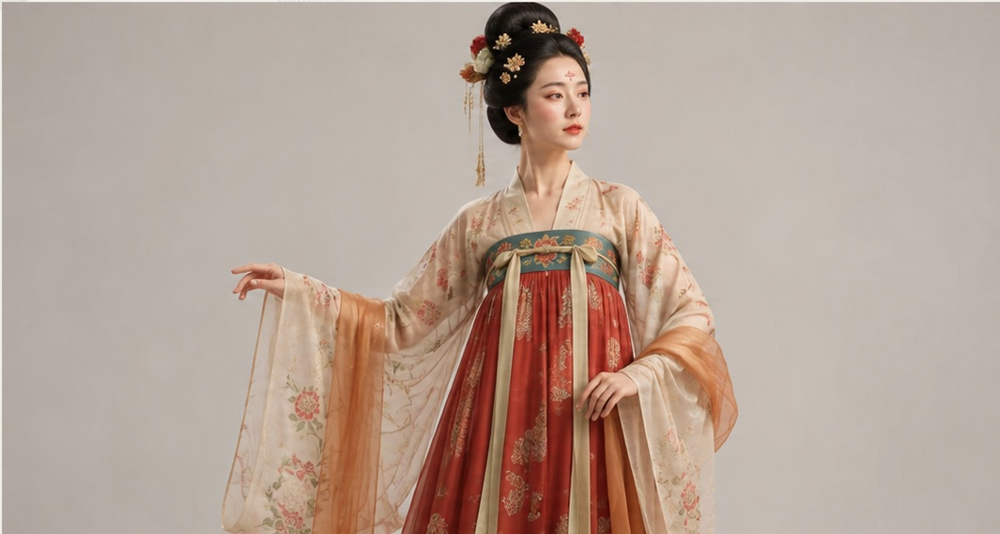
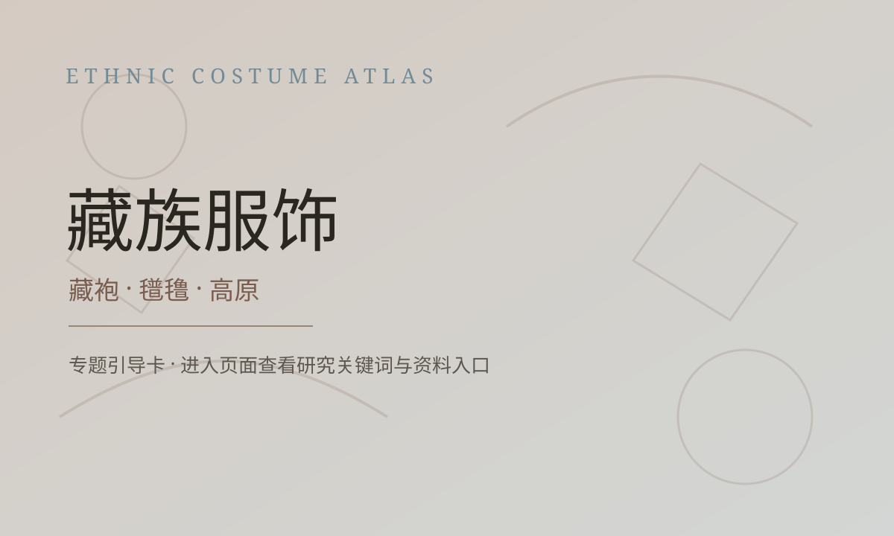
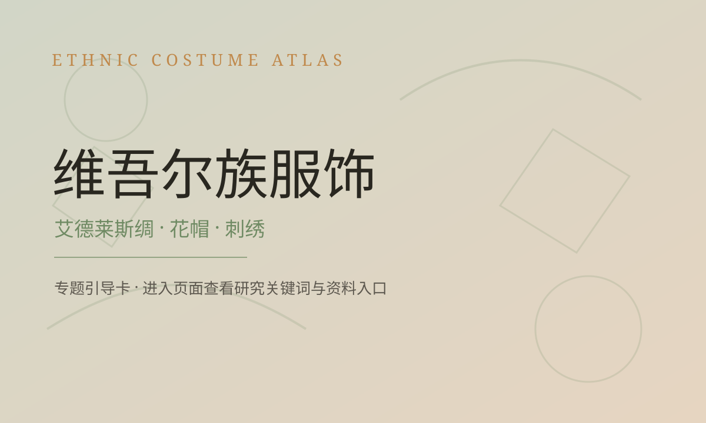

DAILY COSTUME NOTE
每日一课 · 今日服饰文化
每日更新 · 按日期归档

图片说明：AI辅助生成的唐代襦裙视觉示意图，用于辅助观察服装层次与搭配；不是考古出土文物、博物馆藏品或历史照片。
今日专题 · 唐代女性服饰
唐代襦裙：上襦、高腰裙与披帛的组合
图中以唐代女性襦裙为主题，呈现短上襦、腰部较高的裙装和披帛的组合关系。上襦覆盖上身，裙腰位置较高，长裙向下形成连续的垂坠轮廓；披帛搭在肩臂之间，增加服装的层次与动态感。发髻和花饰则构成整体妆束的一部分。
研究时应分别观察上襦的长度与领型、裙腰的固定位置、裙幅与褶量、披帛的搭挂方式，以及织物纹样和配色。唐代服饰并非一个固定样式，初唐、盛唐、中晚唐以及不同身份、场合之间均有变化。图像属于设计性示意，具体形制仍须与唐墓壁画、陶俑、织物实物和文献相互印证。
CULTURE INDEX
服饰文化资料库
可按关键词检索专题、时期、工艺与视觉资料
中国服装史西方服装史服饰考据艺术史影视服装民族服饰传统纹样染织工艺新中式


CHINESE COSTUME HISTORY
中国传统服饰 · 朝代脉络
从形制、材料、色彩、纹样、礼制五个维度建立认知
WESTERN COSTUME HISTORY
西方服饰文化 · 历史脉络
古典文明、宗教、宫廷、工业化与现代时尚
EAST MEETS WEST
中西服饰文化对照
不是简单比较谁更先进，而是理解不同文明的审美逻辑
| 观察维度 | 中国传统服饰（概括） | 西方历史服饰（概括） | 研究切入点 |
|---|---|---|---|
| 结构与造型 | 平面裁剪传统深厚，重视衣片关系、交领与衣身空间。 | 立体塑形传统突出，历史上逐步发展胸衣、裙撑与合体剪裁。 | 比较人体观念、结构逻辑与活动空间。 |
| 礼仪与身份 | 冠服、补服、色彩和纹样常与礼制等级相关。 | 宫廷法令、阶层消费、宗教与职业规范影响穿着。 | 研究服装如何表达权力、身份与秩序。 |
| 材料与工艺 | 丝织、织锦、刺绣、缂丝、蓝印花布等。 | 羊毛呢、亚麻、丝绸、蕾丝、提花织物与印花等。 | 从材料贸易、技术传播与工艺史展开。 |
| 审美倾向 | 含蓄、意象、纹样寓意与整体气韵在不同时期呈现不同侧重。 | 比例、轮廓、装饰和身体塑形在不同历史阶段不断变化。 | 避免用单一标签概括漫长历史。 |
COSTUME IN ART & SCREEN
名画与影视中的服饰文化
把艺术作品作为图像史料，同时辨析艺术加工与历史真实
ETHNIC COSTUME ATLAS
中国民族服饰 · 每日一族深度研究
每个民族独立建档：地域、支系、结构、材料、纹样、工艺与实物证据

第001期 · 已建立档案
苗族服饰
贵州台江馆藏实物切入，研究地域支系、衣襟结构、刺绣、银饰、裙装与节庆场景。
进入苗族独立档案 →
第002期 · 专题档案
藏族服饰
区分卫藏、康、安多等地域，研究藏袍、氆氇、皮毛、邦典与季节穿着。
进入藏族独立档案 →
第003期 · 专题档案
维吾尔族服饰
研究艾德莱斯绸、花帽、袷袢、刺绣及新疆不同绿洲地区的穿着差异。
进入维吾尔族独立档案 →第004期 · 专题档案
哈萨克族服饰
从游牧生活、毛皮材料、长袍、头饰、刺绣与季节性服装展开研究。
进入哈萨克族独立档案 →
第005期 · 专题档案
侗族服饰
研究侗布、蓝靛染、织绣、银饰及不同县域的服装结构与节庆穿着。
进入侗族独立档案 →第006期 · 专题档案
瑶族服饰
按支系和地域研究头饰、衣裙结构、挑花刺绣、色彩与穿着场合。
进入瑶族独立档案 →第007期 · 专题档案
黎族服饰
从海南不同地区的纺、染、织、绣传统和服饰制作技艺建立档案。
进入黎族独立档案 →PATTERN · COLOR · TEXTILE
传统纹样 · 中国色彩 · 纺织工艺
为服装设计建立可检索、可转化的灵感素材库

NEW CHINESE DESIGN WATCH
新中式设计 · 全球观察
传统文化如何进入当代服装、品牌、秀场与国际语境

设计研究专题
从传统符号到当代设计语言
关注国内外设计师如何运用中式廓形、盘扣、立领、丝绸、刺绣、东方色彩与传统纹样。研究时不只看“像不像中国风”，还要分析设计师、品牌、系列年份、具体元素来源、工艺和市场语境。
每条案例建议记录：品牌/设计师、国家、系列名称、发布年份、灵感来源、服装细节、传统元素转译方式、原始出处。
参阅大都会艺术博物馆馆藏RESEARCH & SCHOLARSHIP
学者观点 · 研究成果
以论文、博物馆研究、考古报告和学术著作为依据
LATEST UPDATES
中国传统服饰与全球时尚动态
自动抓取公开资讯标题；重要内容需回到原文核验
首次部署后，GitHub Actions 将定时生成资讯列表。这里也会保留专题档案与来源链接。
REFERENCE DESK
权威资料与馆藏入口
The Metropolitan Museum of Art 大都会艺术博物馆馆藏 · V&A 维多利亚与艾尔伯特博物馆时尚馆藏
Europeana 欧洲数字文化遗产平台 · Smithsonian Institution 史密森学会馆藏
故宫博物院 · 中国国家博物馆 · 中国非物质文化遗产网
说明：网站中的示例图为视觉占位素材，不代表对应历史服饰的考古复原或馆藏实物。正式研究条目应替换为可核验的博物馆藏品图、授权图片或明确标注来源的历史图像。